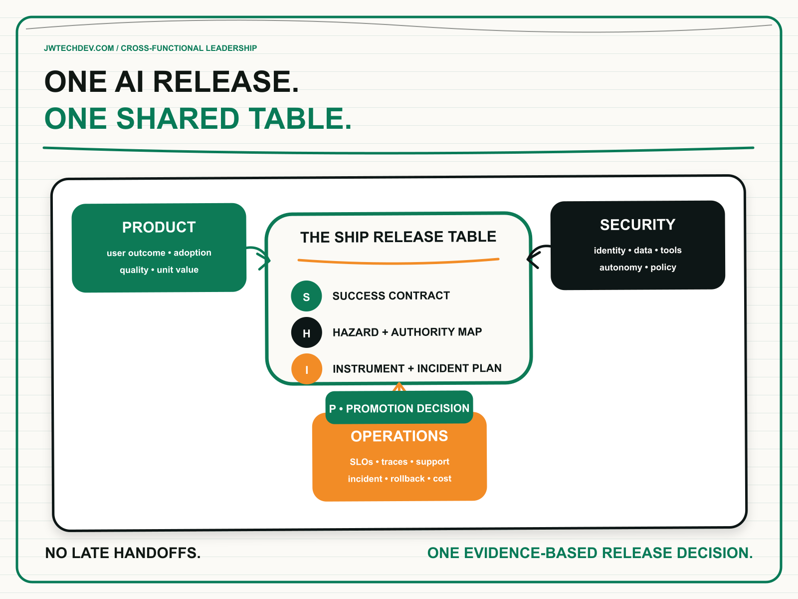

AI engineering needs product, security, and operations at the same table.
AI systems fail organizationally when product defines value, security defines controls, and operations inherits the consequences in three separate meetings. Production requires one shared decision about outcomes, authority, evidence, support, and release readiness.

Quick answer
Product, security, and operations should jointly own the release contract for every production AI capability. Product defines the user outcome and acceptable experience. Security defines identity, data, tool, and autonomy boundaries. Operations defines reliability, observability, incident response, support, cost, and recovery. Engineering implements the contract and returns evidence.
I use the SHIP Release Table: success contract, hazard and authority map, instrumentation and incident plan, and promotion decision. It is a short, recurring decision forum with shared artifacts, not another steering committee.
The problem is sequential ownership
Many AI programs move through the organization as a chain of handoffs. Product writes a use case. A model or engineering team proves the happy path. Security reviews the design near launch. Operations receives a deployment with dashboards to be added later. Each group performs its own work, yet nobody owns the full production outcome.
That structure was already weak for cloud software. Agents make it worse because behavior can depend on natural-language input, retrieved context, model selection, memory, policy, and dynamic tool calls. A product decision about “helpfulness” can change security exposure. A security control can change completion rate. A model upgrade can change latency and cost. An operations alert can reveal that the product is succeeding technically while users abandon the workflow.
AWS Prescriptive Guidance now describes cross-functional AgentOps teams that include AI and ML practitioners, software and distributed-systems engineers, product owners, compliance leads, and platform architects. The point is joint lifecycle ownership from design and deployment through monitoring and improvement. AWS Well-Architected guidance makes the same operating-model argument: teams need shared business goals, clear decision authority, observability, reversible change, and the ability to anticipate failure.
The SHIP Release Table
S: Success contract. Product leads, but all three functions sign. Name the user, job, expected result, quality threshold, adoption signal, and loaded unit cost. Include the failure experience: what should the user see when the agent is uncertain, a tool is unavailable, or the request is outside policy? A release is not successful because the model answered. It is successful because the user completed the intended job within the agreed limits.
H: Hazard and authority map. Security leads with product context and operational input. Classify the data, identities, tools, write actions, external dependencies, and business consequences. Define which actions are read-only, reversible, approval-gated, prohibited, or available only under specific conditions. Include prompt injection, excessive agency, data leakage, tenant crossing, unsafe tool parameters, and compromised dependencies. Security should produce enforceable policies and test cases, not only prose.
I: Instrumentation and incident plan. Operations leads, but product and security specify what the evidence must answer. Trace the user request, agent and model version, retrieved context, policy decision, tool calls, approval, latency, cost, final outcome, and escalation. Define service objectives, alarms, runbooks, support ownership, rollback, kill switch, and break-glass access. Product needs outcome and adoption telemetry; security needs authorization and intervention evidence; operations needs workload health and recovery signals. One trace should serve all three.
P: Promotion decision. The table decides whether to release, limit, repair, or stop. Engineering brings evaluation results, security tests, operational drills, cost evidence, and unresolved exceptions. Product brings evidence that the workflow is worth operating. No function receives an informal veto after the fact because its concerns are built into the entry criteria. The decision and accepted risks are recorded with owners and expiration dates.
The table is intentionally small. Product owns value. Security owns enforceable risk boundaries. Operations owns the system’s ability to run and recover. Engineering owns implementation evidence. Legal, privacy, data, and domain specialists join when the workload requires them, but the core release decision stays clear.
Use a cadence, not a ceremony
The SHIP Table should operate at three moments. At discovery, it classifies the workflow and identifies non-negotiable constraints before the team overinvests. Before production, it reviews evidence against the release contract. After launch, it reviews user outcomes, policy interventions, reliability, incidents, cost, and drift.
This is not permission to schedule more meetings. Use one page, one evidence packet, and clear asynchronous preparation. Routine low-risk releases can follow a paved path with automated checks. High-risk actions get deeper review. Repeated findings should become platform capabilities: approved tool patterns, evaluation suites, policy templates, dashboards, incident playbooks, and deployment gates.
NIST’s DevSecOps work supports this shift from late review to security integrated throughout delivery, backed by automated and standardized practices. The AWS Agentic AI Lens adds agent-specific concerns such as memory, tool use, identity, goal manipulation, multi-agent orchestration, observability, containment, and break-glass runbooks. These concerns cannot be handed to one team at the end.
What to do next Monday
- Select one production-bound AI workflow. Avoid a platform-wide debate. Start where a real release decision is approaching.
- Name one accountable product, security, operations, and engineering representative. Give each person explicit decision rights.
- Draft the four SHIP artifacts. Keep each section short enough to review in one sitting and link to deeper evidence.
- Choose five release measures. Include user success, quality, authorization safety, reliability, and loaded cost.
- Run one failure drill together. Test a bad tool parameter, missing identity, model timeout, policy intervention, or rollback.
- Record the promotion decision. Release, limit, repair, or stop, with named owners for every open exception.
- Turn one repeated control into a paved path. Automate the test or platform capability so the next team moves faster.
The fastest AI organizations will not be the ones that remove product, security, or operations from the process. They will be the ones that give those functions a shared contract, earlier evidence, and fewer late surprises.
I will be at AFROTECH in Houston November 2-6. If you are building an enterprise AI platform, global delivery organization, or technical go-to-market motion, I would be glad to compare notes.
Sources checked
Make production readiness a shared decision
Explore more practical frameworks for enterprise AI, cloud architecture, governance, and technical leadership.
Get the free starter kit